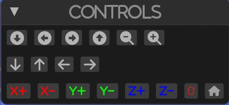
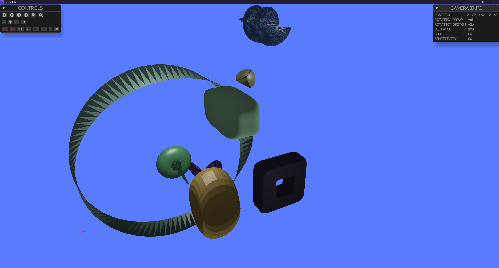

Overview
Tessellate is a powerful 3D scientific visualization library written in Rust, designed for performance and safety. Drawing inspiration from PyVista and VTK, it provides a robust foundation for creating sophisticated scientific visualizations.
Features
- üöÄ Robustness: Written entirely in Rust for maximum speed and efficiency
- üõ°Ô∏è Memory Safe: Leverages Rust's safety guarantees
- üìä Scientific Visualization: Specialized tools for scientific data representation
- üé® 3D Plotting: Comprehensive 3D plotting capabilities
Installation
Add Tessellate to your Cargo.toml:
[dependencies]
tessellate = "0.1.0"
Quick Start
use tessellate::*; use glam::Vec3; fn main() -> TessResult<()> { let meshes = vec![ Torus::default().into(), ]; let opts = GpuOptions::new( CameraOptions::new_position(Vec3::new(0.0, 5.0, 10.0)), LightOptions::new_position(Vec3::new(0.0, 5.0, 3.0)), ); Ok(gpu::visualize(meshes, opts)?) }
Documentation
This book provides a comprehensive guide to Tessellate's features and capabilities. For detailed information on the API, please refer to the API Documentation.
Contributing
We welcome contributions! Please see our Contributing Guide for details.
License
This project is licensed under the MIT License - see the LICENSE file for details.
Definitions
This section provides an overview of the fundamental elements of the mesh module, which lies at the core of Tessellate. The module offers essential building blocks for working with meshes, enabling the creation, manipulation, and analysis of 3D geometries. Below are the primary elements and their roles:
- Vertex: Represents a point in 3D space with
x,y, andzcoordinates. - Edge: A line segment that connects two vertices.
- Face: A flat surface enclosed by edges, typically a triangle or polygon.
- Mesh: A collection of vertices, edges, and faces that together define the structure of a 3D object.
- Properties: Functions and data structures to compute and manage mesh characteristics, such as area and volume.
- Attributes: Metadata associated with the mesh, including colors, texture coordinates, and other descriptive properties.
- MeshType: Specifies the type of mesh, such as a point cloud, surface, or wireframe representation.
- BoundingBox: An enclosing box around the mesh, used for spatial queries and performance optimization.
- Polygon: A flat, multi-sided shape defined by vertices and edges, often used to construct mesh faces.
- Color: Defines the color properties of the mesh or its individual elements.
- Transform: Tools for applying transformations to the mesh, such as translation, rotation, and scaling.
- Boolean Operations: Functions to perform operations like union, intersection, and difference between meshes.
- Query: Tools to search and retrieve elements within the mesh, such as specific vertices, edges, or faces.
- Shape: Utilities for creating and editing geometric shapes that form the basis of the mesh.
Each of these elements plays a crucial role in building and working with 3D models, forming the foundation for advanced mesh operations and analysis.
Mesh
The Mesh struct represents a 3D mesh consisting of vertices, edges, and faces.
It is the core data structure for representing 3D geometries in Tessellate.
The Mesh struct provides various methods for creating, manipulating, and analyzing 3D meshes.
Fields
- vertices: A vector of vertices in the mesh.
- edges: A vector of edges in the mesh.
- faces: A vector of faces in the mesh.
- attributes: Additional attributes associated with the mesh.
Example of creating a mesh
use tessellate::mesh::attributes::Attributes; use tessellate::mesh::parts::polygon::Polygon; use tessellate::mesh::parts::vertex::Vertex; use tessellate::mesh::Mesh; fn main() { let vertices = vec![ Vertex::new(0.0, 0.0, 0.0), Vertex::new(1.0, 0.0, 0.0), Vertex::new(1.0, 1.0, 0.0), Vertex::new(0.0, 1.0, 0.0), ]; let faces = vec![ Face::from((0, 1, 2)), Face::from((0, 2, 3)), Face::from((0, 3, 1)), ]; let mesh = Mesh::from_vertices(vertices, faces, Attributes::default()); // Print the mesh details println!("{:?}", mesh); }
or like that
fn main() { let mesh = Mesh::from_polygons( vec![ poly!(-2.5, -2.5, 0.0; 2.5, -2.5, 0.0; 0.0, 0.0, 5.0), poly!(2.5, -2.5, 0.0; 2.5, 2.5, 0.0; 0.0, 0.0, 5.0), ], Attributes::default(), ); }
Parts and components of mesh
Vertex
A Vertex represents a point in 3D space with x, y, and z coordinates.
use tessellate::v; fn main(){ let vertex1 = v!(1.0, 2.0, 3.0); let vertex2 = Vertex::new(1.0, 2.0, 3.0); let vertex3 = [1.0, 2.0, 3.0].into(); println!("{:?}", [vertex2, vertex3, vertex1]); }
Edge
An Edge represents a connection between two vertices in a mesh.
There are two types of edges:
- MeshEdge - An edge that connects two vertices in a mesh using their indices.
- Edge - An edge that connects two vertices in a mesh using the vertices themselves.
fn main(){ let edge:Edge = (v!(0.0, 0.0, 0.0), v!(1.0, 1.0, 1.0)).into(); }
Face
A Face represents a polygonal surface in a mesh, typically defined by three or more vertices.
There are two types of faces:
- Triangle - A face with three vertices.
- Quad - A face with four vertices.
The face works with indices of vertices in the mesh.
use tessellate::mesh::parts::face::Face; fn main(){ let triangle = Face::new3(0, 1, 2); let quad = Face::new4(0, 1, 2, 3); // Creating faces from a vector of elements with an attempt to triangulate it. let faces = Face::new(vec![0, 1, 2, 3, 4, 5, 6]).unwrap(); }
Polygon
A Polygon is a flat shape consisting of straight, non-intersecting lines that are joined to form a closed chain or circuit.
use tessellate::mesh::parts::polygon::Polygon; use tessellate::mesh::parts::vertex::Vertex; fn main() { // Creating a polygon with three vertices let v0 = Vertex::new(0.0, 0.0, 0.0); let v1 = Vertex::new(1.0, 0.0, 0.0); let v2 = Vertex::new(0.0, 1.0, 0.0); let triangle = Polygon::new(vec![v0, v1, v2]); // Creating a polygon with four vertices let v3 = Vertex::new(1.0, 1.0, 0.0); let quad:Polygon = vec![v0, v1, v2, v3].into(); }
Plane
A Plane is a flat, two-dimensional surface that extends infinitely in 3D space.
use glam::Vec3; use tessellate::mesh::attributes::Attributes; use tessellate::mesh::parts::plane::Plane; fn main(){ // Create a plane from a normal vector and a point let normal = Vec3::new(0.0, 1.0, 0.0); let point = Vec3::new(0.0, 0.0, 0.0); let plane = Plane::new(normal, point); // Calculate the distance from a point to the plane let distance = plane.distance(Vec3::new(0.0, 2.0, 0.0)); assert_eq!(distance, 2.0); }
BBox
A BBox (Bounding Box) is a rectangular box that completely contains a 3D object,
used for spatial indexing and collision detection.
Properties
A set of properties that can be analyzed from a mesh.
Example
use crate::tessellate::mesh::shape::pyramid::Pyramid; use crate::tessellate::mesh::{Mesh, properties::MeshProperties}; use crate::tessellate::mesh::parts::vertex::Vertex; use crate::tessellate::mesh::parts::face::Face; fn main(){ let pyramid = Pyramid::default(); assert!(&pyramid.props().is_manifold()); assert!(&pyramid.props().is_watertight()); assert!(&pyramid.props().isolated_vertices().is_empty()); }
Attributes
The attributes that can be set up on the mesh and provided to use for visualization or other purposes.
MeshType
The type of mesh that can be created. The following types are available:
- Polygons: A mesh that is made up of polygons.
- Lines: A mesh that is made up of lines.
- Cloud: A mesh that is made up of points.
Material
The material for the mesh that affects how it will interact with the light. The following properties can be set:
- Ambient: The ambient color of the material.
- Diffuse: The diffuse color of the material.
- Specular: The specular color of the material.
- Shininess: The shininess of the material.
Color
The color of the mesh. The color can be set as a single color or as a gradient. The color is set up as a tuple of 4 values (r, g, b, a) where r, g, b are the red, green, blue values and a is the alpha value.
Can be set up for the following parts of the mesh:
- Vertex: A color assigned to each vertex.
- Face: A color assigned to each face.
- Line: A color assigned to each line.
- Mesh: A single color for the entire mesh.
- Func: A function that assigns a color a vertex with some logic.
Query
A set of queries that can be performed on a mesh.
It helps to analyze the mesh and extract useful information.
It uses auxiliary structures like KDTree and BSP Tree to perform the queries.
Example
use std::process::Termination; use crate::tessellate::mesh::shape::cylinder::Cylinder; fn main() -> TessResult<()> { let cylinder = Cylinder::default(); let kd_tree = &cylinder.query().try_kd_tree(None)?; let sskd_tree = &cylinder.query().try_sskd_tree(None, None)?; let octree = &cylinder.query().try_octree(None)?; let bsp_tree = &cylinder.query().try_bsp_tree(None)?; let poly_centers = &cylinder.query().extract_poly_centers()?; let edge_centers = &cylinder.query().extract_edge_centers()?; let manifold_edges = &cylinder.query().extract_manifold_edges()?; }
Import
The import module provides functions to read mesh data from files. The supported file formats are:
Usage example can be found in repository
Import STL files
The format of the STL file.
fn main() -> TessResult<()> { let building = files::stl::import_stl("examples/import_models/at_t_building.stl")?; Ok(()) }
Import PLY files
The PLY file format.
fn main() -> TessResult<()> { let building = files::ply::import_ply("examples/import_models/ply/ply_ascii.ply")?; Ok(()) }
Import OBJ files
The OBJ file format.
use tessellate::files::obj::import_objs; fn main() -> TessResult<()> { let options = tobj::LoadOptions::default(); let meshes = import_objs("path/to/your.obj", &options)?; Ok(()) }
Visualization
The library uses wgpu, egui, winit for visualization.
Example
use env_logger::Builder; use glam::{Mat4, Vec3}; use log::{info, LevelFilter}; use tessellate::gpu::options::{CameraOptions, GpuOptions, LightOptions}; use tessellate::mesh::material::{Color, RgbaColor}; use tessellate::mesh::transform::Transform; use tessellate::mesh::{HasMesh, Mesh, MeshError}; use tessellate::{files, gpu, TessError, TessResult}; use tobj::LoadOptions; fn main() -> TessResult<()> { let path = "examples/import_models/cow.obj"; let mut cow = files::obj::import_obj(path, &LoadOptions::default())?; let meshes = vec![cow]; let options = GpuOptions::default(); Ok(gpu::visualize(meshes, options)?) }

Components
Camera
The visualization gives the option to rotate,shift, scale the scene. The manipulations are performed around the center of the scene where the center is the centroid of the bounding box of the scene. The initial position for the camera is set from the configurations.
Light
The light affects the surfaces for the objects in the scene. The light is set from the configurations. Every mesh has a set of light properties that can be set.
Axes
The axes are drawn in the scene to give a sense of direction. The axes are drawn on the corner of the bounding box of the scene.
UI
The UI is used to control the camera and light properties. The UI is drawn using egui.
Gnu Options
The options module provides the following options for the visualization
Camera options
Camera position
The initial positions for the camera. The position is a vector in the space. The default value is [0, 3, 3].
Camera fovy
The field of view of the camera. The default value is 45. That means that the camera has a 45 degrees field of view.
Camera znear
The near clipping plane of the camera. The default value is 0.1. It is the distance from the camera to the near clipping plane.
Camera zfar
The far clipping plane of the camera. The default value is 1000. It is the distance from the camera to the far clipping plane.
Camera speed and sensitivity
The speed and sensitivity of the camera. The default value is 0.1. It is the speed of the camera when moving and the sensitivity of the camera when rotating.
Light options
Light position
The initial positions for the light. The position is a vector in the space. The default value is [0, 3, 3].
Light ambient
Light ambient color. The ambient affects all objects in the scene equally. This helps to ensure that no part of the scene is completely dark, even if it is not directly illuminated by a light source. The default value is [0.4, 0.4, 0.4].
Light diffuse
Light diffuse color. The diffuse color is the color of the light that is reflected off a surface. The default value is [0.8, 0.8, 0.8].
Light specular
Light specular color. The specular color is the color of the light that is reflected off a surface. The default value is [0.8, 0.8, 0.8].
Show light source
Show the light source in the scene. The default value is false.
How to affect intensity of the light
The intensity of the light is calculated as the sum of the ambient, diffuse, and specular colors. To get higher intensity, you can increase the values of the colors.
Controls
By default, there are several controls that are available to the user. These controls are used to manipulate the camera.
Camera controls by mouse
With left mouse button, you can rotate the camera around the object. With right mouse button, you can shift the camera in the plane perpendicular to the view direction. With middle mouse button, you can zoom in and out.
UI controls
The UI controls are displayed on the left side of the screen. 
with the UI controls, you can:
- Rotate the camera around the object
- Shift the camera in the plane perpendicular to the view direction
- Zoom in and out
- (X,Y,Z) +- set the camera position to 0 in the space according to the axis and button pressed
- Reset the camera position to the initial position
- Set all axes to 0
Mesh Manipulation
This section covers the various techniques and operations for manipulating 3D meshes. It includes methods for creating basic geometries, performing mesh filtering, and applying advanced manipulation techniques. The goal is to provide a comprehensive guide for developers and researchers to modify and analyze mesh structures effectively.
Topics Covered
- Basic Geometries: Introduction to creating fundamental geometric shapes.
- Parametric Geometric Objects: Techniques for generating shapes based on parametric equations.
- Explicit Structured Grid: Methods for defining and manipulating structured grids.
- Structured Surface: Techniques for creating and modifying structured surfaces.
- Triangulated Surface: Working with surfaces composed of triangles.
- Platonic Solids: Creating and manipulating regular, convex polyhedra.
- Point Cloud: Handling and processing collections of points in 3D space.
Mesh Filtering Techniques
- Boolean Operations: Performing union, intersection, and difference operations on meshes.
- Extract Cell Centers: Identifying and extracting the centers of mesh cells.
- Clipping with a Surface, Plane, and Boxes: Techniques for clipping meshes using various shapes.
- Collision Detection: Methods for detecting collisions between meshes.
- Volumetric Analysis: Analyzing the volume and other properties of meshes.
- Find and Label Connected Regions: Identifying and labeling connected components in a mesh.
- Decimate a Mesh: Reducing the number of vertices and faces in a mesh.
- Extract Edges: Extracting the edges from a mesh.
- Extract Surface: Techniques for extracting the surface of a mesh.
- Gaussian Smoothing: Applying Gaussian smoothing to a mesh.
- Geodesic Paths: Calculating geodesic paths on a mesh.
- Interpolating: Interpolating values across a mesh.
- Computing Mesh Quality: Evaluating the quality of a mesh.
- Resampling: Resampling a mesh to a different resolution.
- Surface Smoothing: Techniques for smoothing the surface of a mesh.
- Surface Reconstruction: Reconstructing surfaces from point clouds or other data.
- Voxelize a Surface Mesh: Converting a surface mesh into a voxel representation.
- Subdivide Cells: Subdividing the cells of a mesh for finer detail.
Basic shapes
This section covers the creation of basic geometric shapes using tesselate.

The running example can be found in the repository
Shapes
- cuboid
- cube
- rectangle cuboid
- beam
- cylinder
- cone
- grid
- icosahedron
- plane
- pyramid
- ring
- sphere
- torus
All shapes are created using the tesselate module.
The module provides a set of functions to create the shapes.
All shapes have default method and create method.
Example
#![allow(unused)] fn main() { use glam::{Mat4, Quat, Vec3}; use tessellate::mesh::shape::pyramid::Pyramid; use tessellate::mesh::shape::sphere::Sphere; fn pyramid() -> Result<Pyramid, TessError> { let mut pyramid = Pyramid::default(); pyramid.transform(Mat4::from_rotation_translation( Quat::from_rotation_x(0.0), Vec3::new(0.0, 1.0, -3.0), ))?; Ok(pyramid) } fn green_sphere() -> TessResult<Sphere> { Ok(Sphere::create_ico(Vertex::default(), 1.0, 3, RgbaColor::GREEN.into())) } }
Parametric Geometric Objects
Parametric geometric objects are a set of predefined geometric objects that can be generated by specifying a set of parameters. These objects are useful for generating simple geometric shapes that can be used for testing, visualization, and other purposes.

The running example can be found in the repository
The following parametric geometric objects are available in tesselate:
- Bohemian dome
- Bour
- Boy
- Conic spiral
- Dini surface
- Ellipsoid
- Mobius strip
- Pseudosphere
- Superellipsoid
- Supertoroid
All shapes are created using the tesselate module.
The module provides a set of functions to create the shapes.
All shapes have default method and create method.
Example
#![allow(unused)] fn main() { use glam::Vec3; use tessellate::mesh::shape::parametric::*; use tessellate::mesh::material::Color; fn mobius_strip() -> MobiusStrip { MobiusStrip::default() } fn super_ellipsoid() -> SuperEllipsoid { SuperEllipsoid::create( Vec3::new(3.0, 3.0, 2.0), 50, 1.0, 1.0, 2.0, 4.0, 5.0, Color::default()) } fn pseudo_sphere() -> Pseudosphere { Pseudosphere::default() } }
Boolean Operations
Extract polygon and edges centers
It provides the means to extract the centers of the polygons and edges of a mesh. The centers are computed as the average of the vertices that define the polygon or edge. The centers are stored in a new mesh object. The new mesh object is a point cloud with the centers as vertices.
The running example can be found in the repository
For details see query and extract_poly_centers and extract_edge_centers methods.
Connected regions on the mesh
The query on the mesh provides a row of methods to extract the connected regions of the mesh.
The following methods are available in the tessellate module:
extract_connected_regions: Extracts all connected regions from the mesh.extract_largest_connected_region: Extracts the largest connected region from the mesh.extract_connected_regions_by_vertexes: Extracts connected regions based on specified vertices.extract_closest_connected_region: Extracts the connected region closest to a specified vertex.
The running example can be found in the repository
Extract Edges
It provides the means to extract the edges of a mesh.
The running example can be found in the repository
For details see query and the methods:
extract_boundary_edges
This function identifies and returns the edges that are on the boundary of the mesh. Boundary edges are those that belong to only one face.
extract_manifold_edges
This function identifies and returns the edges that are shared by exactly two faces.
extract_non_manifold_edges
This function identifies and returns the edges that are shared by more than two faces.
extract_feature_edges
This function identifies and returns the edges that
Subdivide cells
The filter utilizes three different subdivision algorithms to subdivide a mesh’s cells:
- butterfly - Butterfly subdivision algorithm
- loop - Loop subdivision algorithm
The running example can be found in the repository
fn main() -> TessResult<()> { let ico = mesh::shape::icosahedron::Icosahedron::create(Vertex::default(), 0.2, Attributes::default()); let ico_b1 = ico.subdivide_by_loop(1)?; let ico_b2 = ico.subdivide_by_butterfly(1)?; Ok() }
Auxiliary methods and structures
This section contains a collection of auxiliary methods and structures that are used in the library.
KDTree
A KDTree (k-dimensional tree) is a space-partitioning data structure for organizing points in a k-dimensional space.
K DTrees are useful for applications
that involve multidimensional search keys, such as range searches and nearest neighbor searches.
For more information, you can visit the Wikipedia page on KDTrees.
The running example can be found in the repository
For details see query and `` and try_sskd_tree, try_kd_tree methods.
BSPTree
A BSPTree (Binary Space Partitioning Tree) is a data structure used in computer graphics, computational geometry, and other fields to recursively subdivide a space into convex sets by hyperplanes. This structure is useful for rendering scenes, collision detection, and other spatial queries.
For details see query and `` and try_bsp_tree method.
Distance
Calculate the distance in 3D space.
It can be used to calculate the distance between:
- two vertices
- a vertex and a mesh
- two meshes
The running example can be found in the repository
Notes
The distance is calculated using the Euclidean distance formula. The meshes must be watertight and closed. It uses existing KDTree implementation with vertices so the precision is limited to the vertices.
Contributing
MIT License
Copyright (c) [2024] [Boris Zhguchev]
Permission is hereby granted, free of charge, to any person obtaining a copy of this software and associated documentation files (the "Software"), to deal in the Software without restriction, including without limitation the rights to use, copy, modify, merge, publish, distribute, sublicense, and/or sell copies of the Software, and to permit persons to whom the Software is furnished to do so, subject to the following conditions:
The above copyright notice and this permission notice shall be included in all copies or substantial portions of the Software.
THE SOFTWARE IS PROVIDED "AS IS", WITHOUT WARRANTY OF ANY KIND, EXPRESS OR IMPLIED, INCLUDING BUT NOT LIMITED TO THE WARRANTIES OF MERCHANTABILITY, FITNESS FOR A PARTICULAR PURPOSE AND NONINFRINGEMENT. IN NO EVENT SHALL THE AUTHORS OR COPYRIGHT HOLDERS BE LIABLE FOR ANY CLAIM, DAMAGES OR OTHER LIABILITY, WHETHER IN AN ACTION OF CONTRACT, TORT OR OTHERWISE, ARISING FROM, OUT OF OR IN CONNECTION WITH THE SOFTWARE OR THE USE OR OTHER DEALINGS IN THE SOFTWARE.